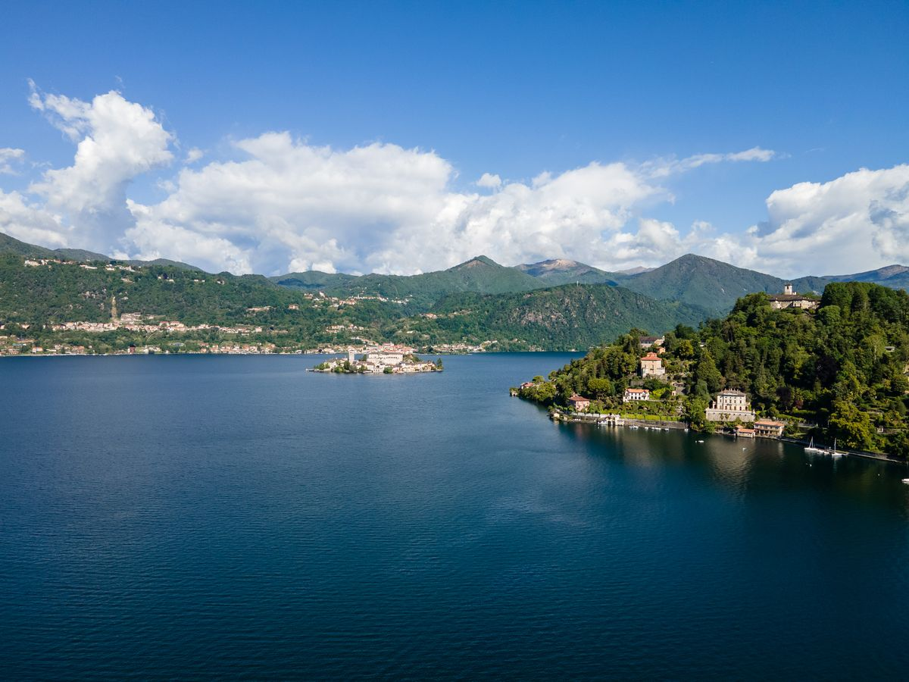
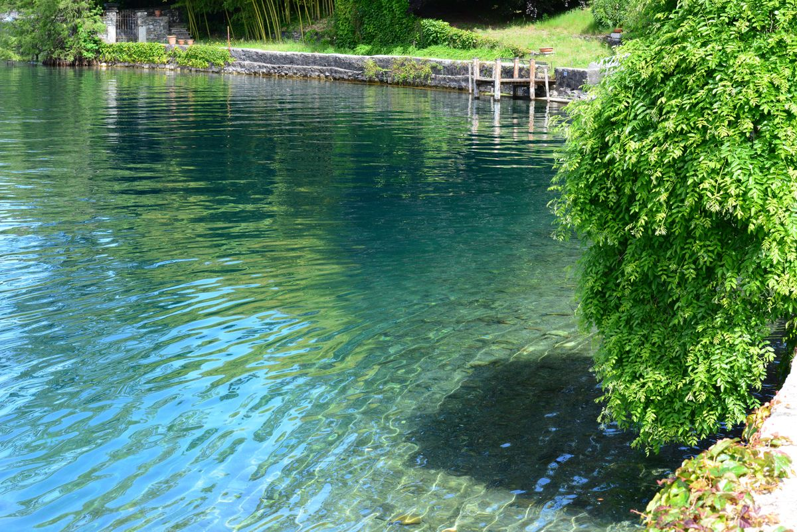
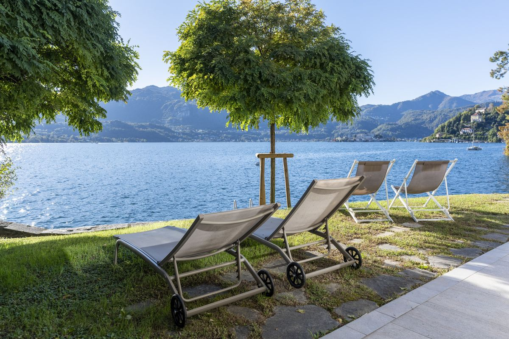

I laghi italiani catturano l'immaginazione dei viaggiatori con acque scintillanti, montagne spettacolari e borghi pieni di fascino. Mentre il Lago di Como e il Lago di Garda dominano di solito le conversazioni, il Lago d'Orta rappresenta un'alternativa autentica. Situato in Piemonte, questo lago più piccolo offre intimità e tranquillità rispetto al suo omologo più frequentato.
L'atmosfera: autenticità contro overtourism
Il Lago di Garda ha registrato 25 milioni di pernottamenti nel 2023, e Sirmione da sola attira oltre 1,3 milioni di turisti all'anno. Il sovraffollamento è diventato un problema: nel maggio 2025 la cittadina ha schierato dei "tutor di strada" per gestire le folle, e si formavano code di 40 minuti solo per attraversare un ponte pedonale. Il Lago d'Orta è il contrasto perfetto: un gioiello ancora poco conosciuto che offre esperienze tranquille e intime. Orta San Giulio ti accoglie con vicoli acciottolati chiusi alle auto, mentre l'Isola di San Giulio ospita un monastero benedettino attivo, all'insegna del silenzio e della contemplazione.
Paesaggio e scenari: fascino intimo contro grande scala
Il Lago di Garda offre una varietà su grande scala, con colline ondulate, vigneti, falesie spettacolari e le Alpi che incombono. Il suo microclima mediterraneo favorisce uliveti e agrumeti. La bellezza del Lago d'Orta è più intima e mistica, avvolta da boschi rigogliosi con vista sul massiccio del Monte Rosa. Il lago più piccolo crea un'atmosfera personale, dove le case color pastello si riflettono in acque immobili attorno alla romantica Isola di San Giulio.

Attività ed esperienze: adrenalina contro nutrimento per l'anima
Il Lago di Garda accontenta gli amanti dell'avventura con venti affidabili per windsurf, vela e kitesurf. Le occasioni per mountain bike ed escursioni abbondano, insieme al parco divertimenti di Gardaland. Il Lago d'Orta punta sull'arricchimento culturale e spirituale: esplorare le 20 cappelle del Sacro Monte di Orta, patrimonio mondiale UNESCO, percorrere la "Via del Silenzio" dell'Isola di San Giulio, scoprire le botteghe artigiane e godersi pranzi senza fretta in Piazza Motta.
Gastronomia: due sapori, due storie
La scena culinaria del Lago di Garda riflette le influenze venete, con vini di fama mondiale come Bardolino, Valpolicella e Soave. Il Lago d'Orta vanta Villa Crespi, sede del ristorante 3 stelle Michelin dello chef Antonino Cannavacciuolo, una meta per gli appassionati di alta cucina. La zona celebra le tradizioni del Piemonte: tartufi, risotto e robusti vini da Nebbiolo, invece di proposte confezionate per il turismo internazionale.

Il prezzo della bellezza: un confronto sui costi
Il turismo di massa del Lago di Garda fa lievitare i prezzi di alloggi e ristoranti, oltre a tasse di soggiorno più alte in alcune località. Il Lago d'Orta offre un rapporto qualità-prezzo superiore, soprattutto nel segmento luxury: il tuo budget arriva più lontano mentre vivi una cultura locale autentica, senza sentirti spremuto dall'infrastruttura turistica.

Accessibilità e come arrivare
Entrambi i laghi si trovano comodamente nel Nord Italia, raggiungibili dagli aeroporti di Milano. Il Lago di Garda, a metà strada tra Milano e Venezia, è una tappa gettonata dei grandi itinerari. Il Lago d'Orta, a ovest del Lago Maggiore, dista circa un'ora e mezza d'auto dall'aeroporto di Milano Malpensa. La differenza emerge quando ti muovi attorno ai laghi: le strade congestionate del Garda fanno un netto contrasto con l'esperienza senza stress del Lago d'Orta.
Il tuo soggiorno perfetto: Villa Volpe
Villa Volpe incarna la quintessenza dell'esperienza del Lago d'Orta: eleganza, privacy e un legame profondo con ciò che la circonda. Il proprietario Alberto Broggi ha accolto oltre 570 ospiti da più di 10 Paesi. La villa offre viste panoramiche sull'Isola di San Giulio, giardini privati che scendono fino all'acqua, accesso a una spiaggia privata e un lusso moderno unito a un rapporto autentico con il luogo. Da segnalare: Villa Volpe è progettata senza barriere architettoniche, così ogni ospite può godersi la magia del Lago d'Orta senza limitazioni.
Il verdetto
Il Lago di Garda offre una vacanza; il Lago d'Orta offre una via di fuga. Il Garda è adatto a chi cerca vita notturna vivace, parchi a tema e attività senza sosta. Il Lago d'Orta conquista i viaggiatori attratti da vicoli nascosti, isole silenziose, alta cucina in dimensione intima e dalla scoperta di piccoli segreti tutti loro. È la scelta migliore per chi cerca autenticità e preferisce la tranquillità al turismo.